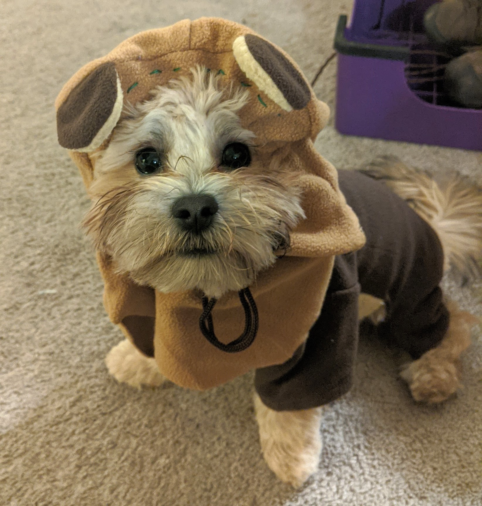

My Dogs
Kuma and Teddy are my pair of Shichons: Shihzu and Bichon mixes.
We got Kuma in 2020 from a reputable breeder. On the two-hour ride home, he threw up on me twice. I was convinced he hated me but he ended up just being car sick.
He was an absolute booger, like all puppies are, for months and months. He still causes trouble here and there. Every single time my mom gets up, he sneaks over to her end table to grab napkins, wrappers, anything he can get his mouth on really.

He's a super big cuddler but refuses to get on your lap unless you grab a blanket.
In October 2023, I decided to randomly scroll on PetFinder to browse cute shelter dogs in my area. I didn't think much of it and was certainly not planning on getting another dog.
A white shihtzu bichon mix puppy appeared on my screen. His name was Kuma, not our Kuma we already had, but his name that the shelter gave him was Kuma.
Out of interest, I looked further into his profile and found he was born on August 24th: my birthday!
It was a sign, it was destiny! There was no way a dog that was the same breed and had the same name as my existing dog and shared my birthday wasn't a sign from the heavens.
For the first few days, we called him “Kuma 2” because we just couldn't settle on a name. My brother tried to name him Frank so I knew I had to decide fast. I settled on the most cliche name, “Teddy”.
Teddy is now six months old and Kuma has taken on the role of big brother quite well. They love playing with each other every single day and I couldn't be happier!